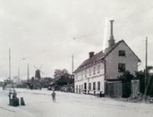
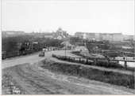
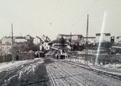
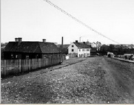
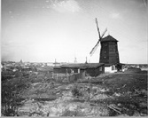

|
 36. Skanstull norrifrån. Kvarnen utanför Skanstull i bakgrunden. Tullhuset närmast. |

|
 37. Skanstull från söder.
|

|
 37. Samma vy på närmre håll som mittbilden till vänster. |
|
 36. Skanstull norrifrån. Kvarnen utanför Skanstull i bakgrunden. Tullhuset närmast. |
|
 37. Skanstull från söder.
|
|
 37. Samma vy på närmre håll som mittbilden till vänster. |
|
 37. Skanstull mot norr. Vita huset i mitten är det gamla tullhuset. Till vänster Grundsborg. |
 37. Utsikt norrut mot Södermalm från kvarnen utanför Skanstull |
När vi idag hör namnet Skanstull tänker vi kanske mesta på att där finns en T-banestation, men hur fick platsen sitt namn? Här i närheten låg på medeltiden ett tegelbruk med namnet Grind. Det är det äldsta namnet på området som vi känner till. När den s k "lilla tullen",1622, infördes på alla "ätliga, slitliga och förnötliga varor", anlades här ett tullhus, och platsen kallades sedan för "Grinds tull". På 1640-talet befästes platsen till skydd mot danskarna som man befarade skulle anfalla från söder. Befästningen benämndes "skans" och platsen kallades sedan Skanstull. |
|
Ur Götgatan. Förr i tiden - nu för tiden. Maj Sundin
Den första tullen låg vid nuvarande Östgötagatans slut (dåTullportsgatan) i höjd ined Bondegatan. Den kallades Grinds tull och fick sitt namn av Grinds gärde i närheten.Tullen flyttade 1660 när staden växte till närheten av Söderskans och fick då namnet Skans tull.
Söder skans har egentligen aldrig haft någon betydelse ut försvarsynpunkt. Den byggdes på 1640-talet men blev varken färdigställd eller anfallen. De man fruktade skulle anfalla var danskarna, men så blev aldrig fallet.
Skanstull tullhus byggdes omkring 1750 och låg strax söder om Skansgraven, mitt på näset
mellan Årstaviken och Hammarby sjö. Det var ett stenhus i två våningar och en vind och hade nio rum.Tullhuset utövade en viss kontrollfunktion ända fram till 1864.
År 1919 revs huset. Näset skulle brytas igenom och Hammarby sluss skulle byggas. Slussen invigdes 1929 liksom Hamrnarbykanalen, Skansbron invigdes 1925.
|
|
|

|
Söder skans (även Grinds skans eller Södermalms skans) var en befästningsanläggning mellan Årstaviken och Hammarby sjö, vid nuvarande Skanstull på Södermalm i Stockholm. Skansen anlades 1645, och byggdes ut ytterligare under åren 1657-1660 efter planer av arkitekten Nicodemus Tessin d.ä. De sista resterna revs under mitten av 1920-talet. Skanstull, Skanstullsbron och Skansbron har sina namn efter denna anläggning.
I samband med kriget mot Danmark 1643-1645, det så kallade Torstensons krig, beslöts att säkra de östra och södra landpassagerna till och från Södermalm, "vedh Gruindhen och Danvijken medh skantz och soldate besettning". |
|
Vid Danvikstull fanns en smal landtunga mellan Hammarby sjö och Saltsjön, här uppfördes 1644 Danviks skans och vid "Grinden" mellan Hammarby sjö och Mälaren (nuvarande Årstaviken) uppfördes 1645 Söder skans. Den sistnämnda bestod av ett hornverk med en framförliggande vallgrav och eskarpmur som skar av själva landtungan mellan Hammarby sjö och Mälaren, samt två bakomliggande flygelredutter.
Området kring Söder skans var av strategisk betydelse. På 1600-talets mitt fanns bara en enda sydlig vägförbindelse från Stockholm, och det var Göta landsväg, förlängningen av nuvarande Götgatan mot söder. På Petrus Tillaeus karta från 1733 syns skansen (Söder Scantz) som en regel tvärs över landtungan, med en öppning för landsvägen som delar sig strax söder om skansen i Dalarövägen och Södermanlandsvägen. |

|
| Söder skans och Danviks skans iståndsattes 1677, 1710, 1719 och 1732, därefter saknades medel för vidare upprustningar. 1774 fylldes en del av graven igen "för landsvägens framdragande". Vallgraven kallades på 1800-talets början för “Skansgraven“ eller “Ryssgraven”. Det sistnämnda namnet ska enligt en obekräftad sägen ha uppstått av att en rysk truppavdelning trängt ända fram dit i samband med slaget vid Stäket 1719, och vid vallgraven nedgjorts till siste man och där fått sin grav. De sista resterna av Söder skans försvann när Hammarby sluss anlades i mitten på 1920-talet. |
|
Eriksdal. Wikipedia:
Eriksdal omfattar området söder om Ringvägen mellan Eriksdalsskolan och Eriksdalsbadet (bilden till höger 1932). Eriksdalslunden ligger i områdets södra del vid Årstaviken. Namnet kommer från gården Eriksdal som låg ungefär där Eriksdalsbadet finns idag. På 1820-talet ägdes gården av Erik Almgren som förmodligen givit namn åt platsen. På 1880-talet köpte Stockholms stad området för utbyggnad av Eriksdals vattenverk.
Basområdet Eriksdal har 1 986 invånare år 2005. Bostadsbebyggelsen i området är huvudsakligen uppförd under 1930-talet i form av lamellhus, med viss sentida kompletteringsbebyggelse. Bland trettiotalshusen finns kvarteret Gräset ritat av Sven Markelius och Eriksdalsskolan ritat av Helge Zimdal och Nils Ahrbom. I området ligger även idrottsanläggningen Eriksdalshallen.
|

|
|
Innan Hammarbyleden byggdes och den då nya Skansbron drogs över den nya kanalen mellan Mälaren och Hammarby sjö, låg det hus utefter hela vägen ner till näset. Kvarteret Grinds bruk började ungefär där nu parkeringsgaraget till Åhléns finns, Idag forns inte något bostadshus i kvarteret.
Inför bygget av högbron, Skanstullsbron,1948 försvann de flesta husen och det som återstår är ett litet inklämt hus under Skanstullsbron som det nu står "Verket" på. Tidigare var det Vattenverkets expeditionskontor. Se vidare nedan! Sundsta på andra sidan kanalen var det sista huset som hade adress Götgatan, nr 134, numera Sundstabacken.
|
|
|
|
Där Åhléns nu ligger huserade Pilsnerbryggeriet och på Götgatan 100, låg Piehls bryggeri. Här kunde söderborna också köpa sin svagdricka. Först när Ringens köpcentrum och bostadsområde byggdes i slutet på 1970-talet revs de sista husen från bryggeriperioden. |

|

|
(Info hämtad från klubbens hemsida)
Idag består Huset Under Bron av Trädgården, Under Bron, Radio Skanstull, Verket, Växthuset, Daytime Sessions, Yard och Under Bron recordings.
|

|
Sveriges första vattenverk Skanstullsverket låg vid Årstaviken och var Stockholms och Sveriges första vattenverk. Bilden visar utsikt över Södermalm och de två vattenverken till höger (Skanstullsverket) och vänster (Eriksdalsverket) i bild (1891).

När Skanstullsverket stod klart 1861 bestod det av ett intag från Årstaviken, tre filterbassänger, en pumpbrunn samt ett maskinhus med bland annat fyra ångpannor och två pumpmaskinerier.
Redan någon månad efter att verket tagits i bruk kunde man konstatera att dess långsamfilter, med en sammanlagd yta på nästan 1600 kvm, fungerade bra. I slutet av sommaren var vattnet i Årstaviken fullt av alger, men vattnet som pumpades ut till stockholmarna var ändå helt klart.
Vattenreservoaren
I Årstalunden, på den plats Södersjukhuset ligger idag, låg vattenreservoaren. Den rymde 5000 kubikmeter vatten och var kopplad till huvudledningen i Götgatan.
Fyra gånger om dygnet fick en man från vattenverket gå till reservoaren för att läsa av vattennivån. 15 år senare köpte man in elektriska vattenståndsmätare som via vattenverkets egen telegraflinje förde över värdena.
  Sveriges första vattenverk, Skanstull. 1893 samt en planskiss över området 1897. |
Redan under 1870-talet behövde Skanstullsverket byggas ut med fler långsamfilter. Man kompletterade även vattenproduktionen med flera grundvattenbrunnar.
Vattenkonsumtionen fortsatte att öka och efter några år stod det klart att Stockholm var i behov av ytterligare ett vattenverk.
Det nya verket, Eriksdalsverket, togs i drift 1884. De följande åren växte även detta verk och kompletterades allt eftersom med fler filter.
 Stockholms andra vattenverk, Eriksdal. Foto från 1893. Trots successiv utbyggnad räckte så småningom inte de två Årstaviksverken till. Staden växte och det blev allt svårare att hålla tillräckligt bra kvalitet på råvattnet. Man började söka efter en ny vattentäkt. Bornsjön hade ett riktigt bra vatten och i närheten fanns även tillgång till grundvatten. Ytvattnet i Mälaren kunde också användas som reserv. Det nya vattenverket i Norsborg stod klart 1904. Syskonverken vid Årstaviken fortsatte dock att delta i vattenproduktionen och först 1918 lades Skanstullsverket ned. 1923 upphörde driften även vid Eriksdalsverket. Samma år började Norsborgsverket ta sitt råvatten från Mälaren. Idag är det Norsborg tillsammans med Lovö vattenverk som försörjer huvudstaden och dessutom flera grannkommuner med dricksvatten och Stockholms ledningsnät har vuxit från de första 3 milen vattenledningar till 220 mil vattenledningar och 310 mil avloppsledningar. Men uppdraget är fortfarande detsamma; att leverera dricksvatten med kvalitet till stockholmarna. |
| Sundsta Gårds historik går troligen tillbaka till 1200-talet, då Sankta Klara kloster erhöll Sundsta som gåva av Magnus Ladulås. Sundsta gård uppfördes intill Årstavikens södra strand och vid västra sidan om landtungan mellan Johanneshov och Skanstull. Namnets bakgrund är okänd men det är sannolikt att den har med det sund att göra som en gång i tiden existerade mellan Årstaviken och Hammarby sjö och som genom den postglaciala landhöjningen försvann. Strax bredvid låg gården Grundsborg, nämnd som krog 1784. På höjden ovanför står sedan 1850-talet väderkvarnen Skanskvarn. |
|
| Sundsta och Grundsborg var ursprungligen torp under säteriet Enskede gård. Läget intill Årstaviken var gynnsamt liksom den direkta närheten till Stockholms två viktiga färdvägar söderut, Göta Landsväg och Dalarövägen. År 1756 avsöndrades Sundsta gård från Enskede och utvecklades därefter till ett herrgårdsliknande sommarställe med lusthus och kägelbana. Marken omfattade fem tunnland vid Årstaviken och under 1800-talet låg här sommarnöjen och småindustrier om varann. Vid 1800-talets början etablerades industriell verksamhet med bland annat ett såpsjuderi. Efter en brand på 1820-talet uppfördes nya byggnader på Sundsta, det är tre av dessa hus som finns kvar idag. Initiativtagaren till nybygget var kryddkramhandlaren N. Holmberg från Stockholm, som bodde här fram till sin död på 1850-talet. |
 Sundsta gård 1899, sedd från norra sidan mot den södra av Årstaviken. Skanskvarn i bakgrunden. |
 Sundsta gård 1943 sedd från söder mot Erikslund och Södersjukhuset |
 Sundstabacken 6 från nordväst |
 Här reser sig den nya Skanstullsbron högt över Sundsta gård, som skymtar nere till vänster i bilden. Ca 1960 |
 Sundsta trädgård från söder med Skanstullsbron till höger. |
 Karta 1930 |
Efter Holmberg ägdes gården av hans dödsbo, som 1858 arrenderade ut den till M.O. Ling från Stockholm. Han hyrde i sin tur ut till Anton Ekholm som tillsammans med en medarbetare drev ett stärkelsebruk på platsen. År 1881 förvärvade Stockholms stad fastigheten Sundsta/Grundsborg, en säkerhetsåtgärd för att skydda och övervaka vattentäkten för det nybyggda Skanstullsverket. Ny arrendator blev trädgårdsmästaren Emil Friberg, som bland annat drev en mycket lönsam tobaksodling på platsen. Kring sekelskiftet 1900 bodde en del av vattenverkets personal på Sundsta, bland dem undermaskinister, järnarbetare, kolskyfflare och eldare (vattenverkets pumpar drevs av ångmaskiner). Då uppfördes även den gula uthuslängan vid Sundstabacken. Skanstullsverket var i drift till 1918 och Eriksdalsverket stängdes 1923, varefter all vattenförsörjning till Stockholm övertogs av det 1904 invigda Norsborgsverket i Norsborg. I samband med det flyttade även vattenverkets personal från Sundsta och vanliga hyresgäster flyttade in. |
|
Grundsborg Ur några källor om Grundsborg
Vid Gullmarsplans tunnelbanestation, något sydost om Sundsta, låg Grundsborg. Idag finns endast en sandbacke kvar, som fungerar som upplagsplats åt gatukontoret.
Under de två högbroarna ligger Stockholmsåsen. Den var dels en förnämlig vattenreservoar dels utgjorde den stadens enda landförbindelse söderut. Hammarbyleden genombröt åsen först i slutet av 1920-talet.
Här låg en hälsobrunn och vattenkuranstalt från mitten av 1800-talet fram till 1880-talet. Sundsta-Grundsborg köptes 1881 av Stockholms stad.
På Grundsborgs mark har också legat mindre industrier som t. ex. Grundsborgs konservfabrik. Under några årtionden därefter tillverkaders också Bröderna Sandströms skidor i lokalerna, en på sin tid känd märkesvara.
Ur boken Götgatan. Förr i tiden - nu för tiden. Maj Sundin. Trafik-Nostalgiska förlaget, 2015
*******
(Om Grundsborg)
**************
Lag-Utskottets Utlåtande N:o 7, 1
N:o 7.
(forts i högerspalten)
|
----------------
»Strax söder om Stockholms stad, och skild från dess vattenledningsverks
område endast af en smal jordremsa, ligger lägenheten
Grundsborg, vida känd för det der befintliga källvatten, som länge ansetts
för ett bland de bästa i Sverige. Vattnet i den af de derstädes
liggande källorna, som befinner sig närmast intill vattenledningens område, hade i många år använda till bad i en vid Grundsborg anlagd
kallvattenkuranstalt.
Vid midsommartiden 1882 måste emellertid nämnda
anstalt utaf temligen oväntade skäl nedläggas. Stockholms stads drätselnämnd
förskaffade sig nemligen en slags nyttjanderätt till den jordremsa,
som skilde vattenledningens område från den till Grundsborg
hörande marken, och på denna jordremsa gräfdes en brunn, betydligt
djupare än den nyss omnämnda källan. Ur denna brunn pumpade vattenledningens
starka pumpar med den påföljd, att kallvattenkuranstaltens
källa totalt utsinade, hvilket naturligtvis vållade stora förluster
och obehag både för egaren och badgästerna.
Någon process uppstod
icke om denna sak, dels emedan staden ett år derefter inköpte egendomen
- om hvilket köp redan vid tiden för denna händelse underhandlingar
pågingo - dels emedan resultatet af en process, enligt flere
juristers utsago, skulle ha varit synnerligen osäkert till följd af den
nuvarande lagstiftningens brist på tydlighet, och fullständighet.
»När emellertid förtroendemännen i rikets främsta kommun ansett
med sin värdighet förenligt att under sken af lag och rätt tillegna sig
annans egendom, skulle det ej förvåna, om metoden följdes af andra
personer, hos hvilka rättskänslan öfverröstats af vinningsbegäret.
På detta sätt skulle stora förluster kunna uppstå både för det allmänna
och för de enskilda.
Medicine doktor A. Levertin har uti sill nyligen
utkomna handbok öfver de svenska brunns- och. badorterna omnämnt
här relaterade fall och yttrat sig om nödvändigheten af att genom
några lagbestämmelser söka skydda våra kurorter samt uppmanat att
dermed ej dröja så länge, tills Grundsborgs öde drabbar flere bland
våra brunns- och badorter. Men ej allenast sådana anstalter, utan äfven
industriella anläggningar hafva intresse häraf.
I ofvan omförmälda fall
var det hardt när, att en på samma egendom belägen mineralvattensfabrik
fått nedläggas, emedan äfven den källa, som var afsedd för dess
räkning, starkt hotades af vattenledningsverkets pumpande.
»Dylika olägenheter och förluster torde emellertid för framtiden
kunna förebyggas genom att i lagen införa några bestämda ord om
skydd för vatten under jordytan. Ett sådant stadgande passar måhända
lämpligast i Jordabalkens 18 kap. 1 §. Detta lagrum lyder för
närvarande sålunda:
»Hvar som tager med våld, af den i handom häfver, jord, hus,
skog, vatten eller vattenverk, eller med någorhanda åtgärd för honom
onyttigt gör, och vill sig det egna; gälde åter skadan, och böte han
och alle de, som med honom i samma gerning varit, fyratio daler
hvardera.»
Lag-Utskottets Utlåtande N:o 7. 3
»Enligt någras förmenande omfattar ordet vatten i denna paragraf
äfven vatten under jordytan; men då denna åsigt är långt ifrån allmän,
och då saken, såsom ofvan visats, för många är af stor vigt, yrkas
vördsamt,
att Riksdagen behagade för sin del besluta en sådan
förändring af Jordabalkens 18 kap. 1 §, att deri måtte gifvas
bestämd föreskrift om skydd äfven för källvatten.»
Då Utskottet för sin del hyllar den mening, att det af motionären
till ändring föreslagna lagrum, 18 kap. 1 § Jordabalken, redan uti sin
nuvarande lydelse innefattar det skydd för under jordytan rinnande
källvatten, hvilket motionären afser att genom lagändringen få särskilt
stadgadt,
samt då icke visadt är, att domstolarne annorlunda tolkat ifrågavarande
lagbud;
får Utskottet, under hänvisning tillika, beträffande det skydd, för
sådant källvatten åtnjutes redan innan till domstol stämmes, till 157 §
Utsökningslagen, hemställa,
att motionen icke må vinna Riksdagens bifall.
Stockholm den 4 Februari 1884. |
|
Ur boken Götgatan. Förr i tiden - nu för tiden. Maj Sundin På Grundsborgs mark låg vid sekelskiftet konservfabriken Preserva, som bl.a. lade ärter och gurkor på burk. Ägare var två bröder som hette Atterberg. Ärterna odlade man själv vid Årsta gärde, dillen köptes hos trädgårdsmästare i närheten. I Preservas lokaler flyttade senare Bröderna Sandströms skidfabrik in 1914. Sandströmsbröderna kom från Umeå och började tillverka skidor till sig själva då de inte fick tag på bra skidor att köpa. Så småningom började även bekanta beställa och snart var verksamheten igång. När fabriken gick som bäst producerade inan upp till 300 par skidor varje dag. Man levererade till flera idrottsklubbar och till armén. Butiker fanns bland annat på Birger jarlsgatan och Norrlandsgatan. Fabrikslokalen blev så småningom för trång och de flyttade verksamheten till Lindesberg i början av 1940-talet, lagom till att fabrikshuset ändå skulle rivas. |

Holms tomtkarta från 1674 med Grinds bruk till höger och Grinds hage till vänster |
 2018. Platserna för Grinds bruk respektive Grinds hage vid pilarna |

|
Calle Ragnerstam (Facebookgruppen Det gamla Stockholm)
Textilfabrikören Erik Silfvering (1809-1890) köpte på 1850-talet Grinds bruk som låg på Södermalms södra utkant. Det var ett illa beryktat område - i Grinds hage låg rackarnens (bödelns dräng) stuga. Där fanns kriminella ligor och där tömdes latrin och annat avfall. Dessutom grävdes där stora massgravar för dem som dog i pesten 1710-11. Grinds hage kom att börja kallas för Silfverings hage, vilket senare blev Eriksdalslunden. Namnet Eriksdal uppträder i handlingar första gången 1861.
Fabrikör Silvfering uppförde denna arbetarbostad, kanske för sina anställda, vilken då låg vid Grindsgatan nr 12-16. Den verkar av ritningarna att döma varit uppdelad på 16 lägenheter om 1 rum och kök, vilket måste ses som en tämligen god standard med 1850-talets mått mätt.
|
|
Namnet? Jo, Grinds hage (eller Grims hage) var benämningen för det område som sträckte sig från Skanstull och bort över Eriksdalsområdet. Namnet finns omnämnt redan 1487 i Stockholms Tänkebok. Troligen syftar det inte på ett personnamn utan snarare just en - grind. Mycket tidigt i historien spärrade man nämligen av det smala sund som fanns mellan Södermalm och fastlandet för att kreaturen inte skulle kunna gå över till andra sidan. Vid huvudvägen söderut från staden fanns en grind i detta stängsel och det sannolikaste är att namnet härstammar från just denna grind.
Redan år 1577 byggdes i Grinds hage en tegellada för torkning och bränning av lera, Grinds Bruk. Två hundra år senare massproduceras här kritpipor. År 1830 finns på platsen ett boställe upplåtet åt skarprättaren som hade sin morbida arbetsplats i närheten av där Gullmarsplan nu ligger.
Stockholms Stads Historia |

|

Utsikt mot Skanstull från Hammarbygatan. Hilda Lind 180-99. I förgrunden stadens trädgårdar. Skanskvarn i bakgrunden
|
|
|
|
Skyddsmedel för friska: "att afhålla sig från överdrifna kropps- och själsansträngningar, häftiga sinnesrörelser och utsväfningar af alla slag"
När man upptäckte att koleran smittade via smutsigt vatten började man bygga avloppsystem, vattenledningar och vattenreningsverk för att undvika fler koleraepidemier. Men kolerabakterien finns fortfarande kvar och i områden av världen som saknar moderna avloppssystem drabbas människor fortfarande av kolera. Koleran dödade många människor på kort tid och det blev snart ont om plats på stadens kyrkogårdar. Samtidigt ville myndigheterna begrava kolerans offer snabbt för att undvika att fler skulle bli smittade. Därför kördes liken ut ur staden och begravdes i massgravar utanför tullarna. De döda från Södermalm kördes ut till en kyrkogård som låg strax öster om den plats som idag är Gullmarsplan. Kyrkogården anlades av Kung Gustav IV Adolf i början av 1800-talet. Det var en tid då Stockholm växte snabbt och behovet av begravningsplatser utanför den sjukdomshärjade staden var stort. Dessutom behövdes en begravningsplats för alla soldater som dött i kriget mot Ryssland och Danmark. Efter freden användes kyrkogården för okända och fattiga människor. Kyrkogården användes fram till 1901 och var under de sista åren en vanlig begravningsplats för allmänheten. Idag är kolerakyrkogården inte bara en naturskön park med promenadstråk och cykelväg, utan också en lagskyddad fornlämning. |


{kind=link}
{kind=link}
{kind=link}
{kind=link}
{kind=link}
{kind=link}